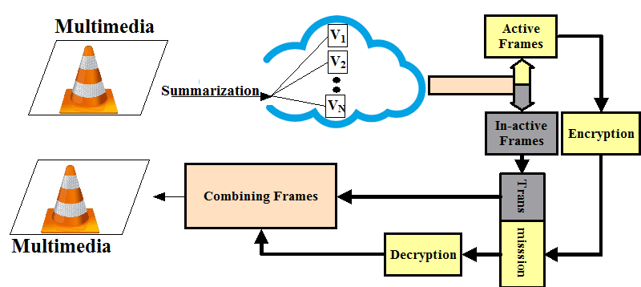
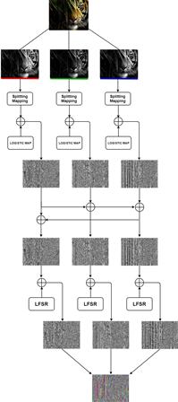

Secret Sharing Scheme Based Technology for
Multimedia Security over Cloud
Funding Agency: Department of Science and Technology (DST, 2019)
Principal Investigator: Dr. Krishan Kumar
| Introduction: Our aim to developing a secure and secret sharing, compression and encryption model which achieves higher security in less computation time. Summarized multimedia content may savethe storage over Cloud as well as bandwidth during the transmission over the Internet. Secret Sharing scheme, summarized multimedia content based approaches over cloud can offer substantial advantages in designing a secure communication system for multimedia. Important portions/partial content are detected first based on the interestingness of the content and then encrypt that content only for secure communicationin order to save the transmission time, power consumption over server/Cloud across the Internet. The proposed project will use the concept of compression and encryption the multimedia content for secure communication over Internet/ Cloud.The project will involve two units: content summarization and encryption. We will be using open source tools (open-stack Cloud), compression techniques and secrete sharing schemes to achieve the objectives. The pictorial view of the proposed model can be seen in figure. |  |
PROJECT ACTIVITIES AND FINDINGS
Anomaly Detection in Traffic Videos
Paper PPT

New Anamoly Dataset
A custom dataset was generated in a staged/controlled environment. We shot from four strategically placed cameras simultaneously to capture multiple views of same scene. The videos were recorded at four different locations in different times of the day. The scenes involve normal data, fight happening in different scenarios, snatching, kidnapping etc. Scenes were shot indoor/outdoor, in natural light-artificial light, low light as well to cover illumination changes. The videos were recorded from varied distances to capture subjects with varying size. Post processing yielded usable clips of approx. 90 minutes (90x60x30x4= 648000 frames). Snippet for the same are depicted in the figure.

PUBLICATIONS
1. Aditya Mantri, Navjot Singh, Krishan Kumar, and Sanjay Dahiya, “Pre-Encryption and Identification (PEI): An Anti-crypto ransomware technique,” IETE Journal of Research, 2022,
2. Krishan Kumar , “P2BED-C: A Novel Peer to Peer Load Balancing and Energy Efficient Technique for Data-Centers Over Cloud, Wireless Personal Communications, 2021
3. Krishan Kumar , “Text Query-based Summarized Event Searching Interface System using Deep Learning over Cloud,” Multimedia Tools, and Applications, 2021
4. Rama Krishna Koppanati, Krishan Kumar, “P-MEC: Polynomial congruence based Multimedia Encryption technique over Cloud,” IEEE Consumer Electronics Magazine, 2020.
5. M. Abhilash, A. Bano, N. Singh “Enhanced Security Architecture for Visual Cryptography Based on Image Secret Sharing,” IEEE Annual Ubiquitous Computing, Electronics & Mobile Communication Conference, 2020.
6. R. Koppanati, K. Kumar, S Qamar “E-MOC: An efficient secret sharing model for multimedia on cloud,” International Conference on Deep Learning, Artificial Intelligence and Robotics (Scopus), 2019.
| Publications | Abstract |
|  | In this multimedia era, the security of the multimedia content over Cloud become a crucial research area. There are several modes of communication available for transmitting the information to Cloud from one place to another place around the globe. Such communication networks are open to all where anyone can access very easily. In order to abate the crimes, there are so many techniques, which have evolved such as RSA, DES, Elgamal and etc. However, these techniques seem limited in order to provide the security of the user data. This work high- lights a novel multimedia encryption model over Cloud where the key is generated dynamically without involving the user. It creates difficulties for an attacker to break the cipher in a reasonable time without the key sequence and mean value of the three channels. Image splitting approach helps to make the data more secure. |